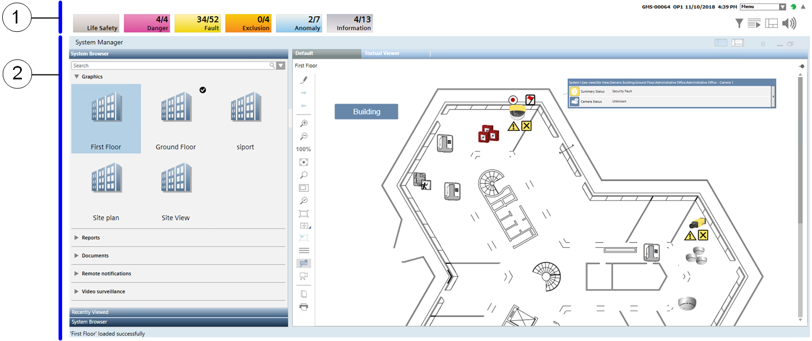

DMS Lite User Interface
The screen of the Lite UI DMS management station has two main sections: the Summary bar at the top, which can be collapsed in a slim bar row or expanded, and a large working area occupied by applications such as System Manager or Event List.
In the example below, the Summary bar is expanded and System Manager shows a graphical view of a floor plan.

| Name | Description |
1 | Summary bar | The main point of entry to all the functions of the software. It can be collapsed and you must click the downicon |
2 | System Manager | System Manager is built to allow for a common workflow for all system navigation and allows users to select from traditional applications or, for a more specific focus, select the part of the facility they are interested in, and let the system guide them to the most relevant information. |
 on the top right to display it.
on the top right to display it.